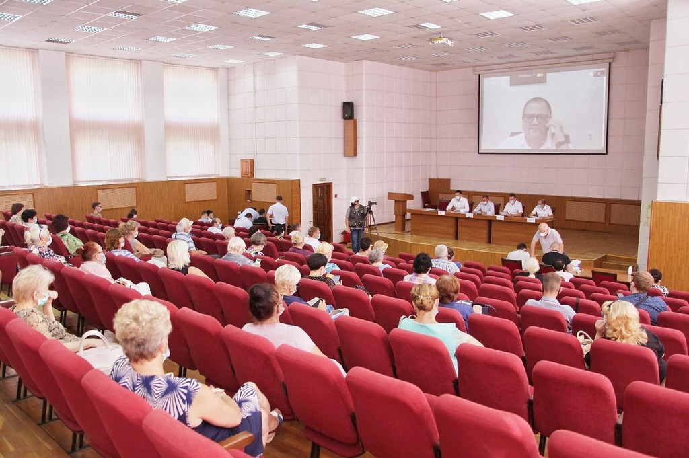

За підсумками щорічних зборів було обговорено багато важливих для миколаїва питань.
Результаты цих зборів
був побудований план на 2022 рік
а також планування подальшого розвитку підприємства
29 липня 2021
Жителі міста
обговорили важливі питання
щодо обстановки у місті
29 липня 2021
Жителі міста
обговорили важливі питання
щодо обстановки у місті
29 липня 2021
Жителі міста
обговорили важливі питання
щодо обстановки у місті
29 липня 2021
Останні новини
За підсумками щорічних зборів буде обговорено багато важливих для Миколаїва питань
Ремонт доріг За кредитні кошти у Миколаєві капітально відремонтують 17 доріг з яких найбільшу суму спрямують її капітальний ремонт коштуватиме 50 мільйонів 837 тисяч гривень 50 мільйонів 837 тисяч гривень.

1 грудня у Миколаєві увімкнуть електросирени У середу, 1 грудня, в Миколаєві перевірять систему централізованого оповіщення. систему централізованого оповіщення.
Як поінформували в управлінні з питань надзвичайних ситуацій та цивільного захисту населення міськради, електросирени лунатимуть з 13 до 14 години. Перевірка місцевої автоматизованої системи централізованого оповіщення виконуватиметься за графіком.